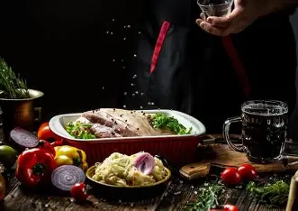

Our Mission
Welcome to The Pantry Chef! Our mission is simple: to help you create delicious, satisfying meals using ingredients you already have in your kitchen. We believe that great food doesn't have to be complicated or require a special trip to the grocery store. Our recipes are designed to be practical, easy to follow, and inspire creativity with everyday pantry staples.
Whether you're a seasoned cook looking for new ideas or a beginner who wants to make a simple, hearty meal, The Pantry Chef is here to guide you. We focus on budget-friendly, resourceful cooking that minimizes food waste and maximizes flavor.
Our Story
The Pantry Chef was born from a desire to make cooking less of a chore and more of a creative, enjoyable experience. We understand the challenges of planning meals, especially when life gets busy. By focusing on what's already available in your pantry, we hope to simplify your meal prep and empower you to become a resourceful chef in your own home.
Our Team
We are a small team of passionate food lovers, home cooks, and digital creators dedicated to bringing you the best and most practical recipes. Our team works hard to test every recipe to ensure it's simple, reliable, and, most importantly, delicious.